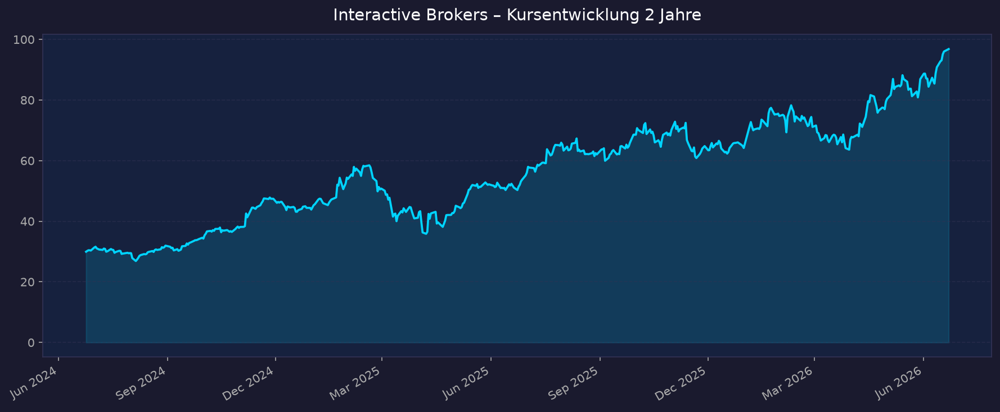
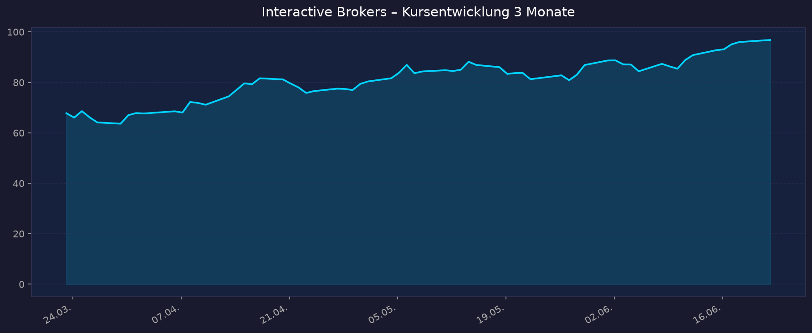

Hinweis Aktiensplit: IBKR vollzog im Juni 2025 einen 4:1-Split. Alle Kurs- und EPS-Werte in dieser Analyse sind split-bereinigt. Vor-Split-Quartale (z. B. Q4 2024 mit EPS „1,99") werden zur Vergleichbarkeit auf die heutige Skala umgerechnet (÷4).
Hinweis Konzernstruktur: IBKR ist eine Holding. Die börsennotierte Class-A-Aktie repräsentiert nur einen Minderheitsanteil; Gründer Thomas Peterffy und das Management halten über Class-B / IBG LLC die wirtschaftliche Mehrheit (~70 %+). Daher weichen Kennzahlen je nach Berechnungsbasis stark ab: Börsenwert der Class A ≈ 43 Mrd. USD (Finviz), vollkonsolidierter Unternehmenswert ≈ 164 Mrd. USD (yfinance). Beide Werte sind unten ausgewiesen.
📈 1. Kursentwicklung
Aktueller Kurs: 96,82 USD | Veränderung heute: +0,85 % (Vortagesschluss 96,00 USD)
Chart – 2 Jahre

Chart – 3 Monate

| Zeitraum | Kurs Start | Kurs Ende | Veränderung |
|---|---|---|---|
| 2 Jahre | 29,95 USD | 96,82 USD | +223 % |
| 3 Monate | 67,77 USD | 96,82 USD | +43 % |
| YTD 2026 | — | 96,82 USD | +50,6 % (Finviz) |
| 52-Wochen-Hoch | — | ~97,8 USD | — |
| 52-Wochen-Tief | — | ~49,3–50,8 USD | — |
Der Kurs notiert praktisch am Allzeit- bzw. 52-Wochen-Hoch (~-1 % vom Hoch). Über 12 Monate liegt die Performance je nach Quelle bei +72 % bis +88 %.
🔗 Interaktiver Chart: TradingView IBKR
💹 2. KGV-Entwicklung (Kurs-Gewinn-Verhältnis)
Aktuelles KGV (trailing): ~41,5 | Forward-KGV: ~33,7
| Zeitraum | KGV | Einordnung |
|---|---|---|
| Aktuell (trailing) | ~41,6 | deutlich über historischem IBKR-Schnitt (~20–25) |
| Forward (2026e) | ~33,7 | erwartetes Gewinnwachstum eingepreist |
| Branche (Broker/Diversified Financials) | ~15–20 | IBKR mit klarem Premium |
| Historisch (Mittel 3–5 J.) | ~22–26 | aktuelle Bewertung am oberen Rand |
Bewertung: Das KGV ist historisch hoch und liegt deutlich über dem Broker-Branchenschnitt. Begründbar durch überdurchschnittliches strukturelles Wachstum (Konten +31 %, Vermögen +38 %) und 77–79 % Vorsteuermarge — aber es bietet wenig Puffer bei Wachstumsenttäuschung oder Zinssenkungen.
💰 3. Sales Multiple (Kurs-Umsatz-Verhältnis / P/S) & Broker-Kennzahlen
| Kennzahl | Wert | Basis | Einordnung |
|---|---|---|---|
| P/S (Class A, börsennotiert) | ~4,0 | Finviz | für einen margenstarken Broker moderat |
| P/S (vollkonsolidiert) | ~25,5 | yfinance | inkl. Minderheitsanteile → optisch hoch |
| Vorsteuermarge | 77–79 % | Q1 2026 / Q4 2025 | außergewöhnlich hoch für die Branche |
| Marktkapitalisierung (Class A) | ~43,1 Mrd. USD | Finviz | — |
| Unternehmenswert (konsolidiert) | ~164 Mrd. USD | yfinance | — |
Trend: Bei einem Broker ist das P/S nachrangig; entscheidend sind Net Interest Income, Provisionserträge und Vorsteuermarge. Die Margenexpansion (77 %+) stützt die Premium-Bewertung. Saubere historische P/S-Reihe split-/strukturbereinigt: nur eingeschränkt verfügbar.
📊 4. Handelsvolumen (Trading Volume)
| Zeitraum | Ø Tagesvolumen | Auffälligkeiten |
|---|---|---|
| 3-Monats-Durchschnitt | ~4,9 Mio. Aktien | stabil erhöht |
| 10-Tage-Durchschnitt | ~4,6 Mio. Aktien | leicht unter 3M-Schnitt |
| 2-Jahres-Durchschnitt | nicht sauber verfügbar (Split verzerrt Reihe) | — |
Volumentrend: Liquide, mit erhöhtem Volumen rund um Quartalszahlen und die SEC-PDT-Regeländerung (Juni 2026). Keine ungewöhnlichen Ausreißer im aktuellen Quartal.
🏦 5. Insider Trades (letzte ~12–24 Monate)
| Datum | Name | Funktion | Kauf/Verkauf | Aktien | Preis | Wert |
|---|---|---|---|---|---|---|
| 27.05.2026 | Ro Khanna | Kongress (politisch) | Kauf | — | 80,95 | 1–15k USD |
| 08.05.2026 | Denis Mendonca | CAO | Verkauf (Steuer) | 11.157 | 84,42 | ~942k USD |
| 01.05.2026 | Lori A. Conkling | Direktorin | Kauf | 25 | 79,64 | ~1.991 USD |
| 28.04.2026 | Lawrence E. Harris | Direktor | Verkauf | 26.000 | 76,93 | 2,0 Mio. USD |
| 01.04.2026 | Lori A. Conkling | Direktorin | Kauf | 25 | 68,38 | ~1.710 USD |
| 27.01.2026 | Earl H. Nemser | Vice Chairman | Verkauf | 60.200 | 75,30 | 4,5 Mio. USD |
| 26.01.2026 | Earl H. Nemser | Vice Chairman | Verkauf | 94.800 | 76,19 | 7,2 Mio. USD |
| 23.01.2026 | Earl H. Nemser | Vice Chairman | Verkauf | 145.000 | 77,85 | 11,3 Mio. USD |
3-Monats-Überblick: Überwiegend Netto-Verkäufe (Harris, Mendonca), nur Mini-Käufe von Direktorin Conkling. 12-Monats-Überblick: Stark verkaufslastig — Insider-Verkäufe ~114 Mio. USD gegenüber nur ~30 Tsd. USD Käufen (v. a. Nemser, CFO Brody, Harris).
Kontext hoher Insider-Besitz: Gründer Thomas Peterffy kontrolliert über die Holding-Struktur die wirtschaftliche Mehrheit. Die Class-A-Insider-Quote liegt bei nur ~2,8–3,1 %. Die regelmäßigen Verkäufe einzelner Manager sind bei einem Gründer-dominierten Unternehmen mit langjährigen Vesting-/Diversifikationsprogrammen üblich und nicht zwingend ein bärisches Signal — die Häufung großer Nemser-Verkäufe nahe Hoch ist dennoch zu beachten.
Quelle: SEC Edgar / MarketBeat / StockTitan
🩳 6. Short-Positionen
Aktuelle Short Quote: ~3,1 % des Streubesitzes (Float) | Short Ratio: ~2,7 Tage
| Kennzahl | Wert | Einordnung |
|---|---|---|
| Short Float | ~3,1 % | niedrig |
| Short Ratio (Days to Cover) | ~2,7 | gering |
Einschätzung: Niedrige Short-Quote — kein nennenswerter Bärendruck, keine Short-Squeeze-Dynamik. Der Markt ist überwiegend long positioniert; das passt zur Nähe am ATH.
🗞️ 7. Aktuelle Nachrichten
| Datum | Quelle | Nachricht | Relevanz |
|---|---|---|---|
| 22.06.2026 | StockTitan/Investing | IBKR integriert ChatGPT und Grok in agentische Trading-Tools (nach Claude-Start) | Hoch |
| Juni 2026 | NerdWallet/Schwab | SEC schafft 25.000-USD-PDT-Regel ab (in Kraft seit 04.06.); IBKR setzt sofort um → volumenfördernd | Hoch |
| Mai 2026 | Businesswire | IBKR öffnet als erster US-Broker Zugang zum koreanischen Aktienmarkt (KRX, >2.700 Titel) | Hoch |
| Mai 2026 | LeapRate | Prediction-Markets-Plattform vereint Kalshi, CME, ForecastEx in einem Interface | Mittel |
| 23.04.2026 | StockTitan/Simply Wall St | Q1 2026: Rekordumsatz 1,67 Mrd. USD, Margenexpansion, Dividende auf 0,0875 USD erhöht | Hoch |
| Juni 2026 | Seeking Alpha | Wolfe Research startet Coverage mit „Outperform", Kursziel 101 USD | Mittel |
| April 2026 | Benzinga/24-7 Wall St | Gründer Peterffy fordert öffentlich Legalisierung von Insider-Trading (Odd-Lots-Podcast) | Gering |
| Juni 2026 | MarketBeat/TipRanks | Analysten-Konsens „Buy", Durchschnittsziele ~83–91 USD (teils unter Kurs) | Mittel |
Sentiment: Überwiegend positiv — Produkt-/Markt-Expansion (Korea, Prediction Markets, AI), regulatorischer Rückenwind (PDT). Dämpfer: einige Analysten-Kursziele liegen unter dem aktuellen Kurs → Bewertung als Streitpunkt.
📋 8. Letzte 3 Quartalsberichte (split-bereinigt)
Q1 2026 (Quartal endete 31.03.2026)
| Kennzahl | Ist | Erwartung | Abweichung |
|---|---|---|---|
| Nettoumsatz (GAAP) | 1,67 Mrd. USD | ~1,6 Mrd. USD | ✅ über Erwartung |
| EPS (adjustiert) | 0,60 USD | ~0,55–0,58 USD | ✅ Beat |
| Net Interest Income | 904 Mio. USD (+17 %) | — | — |
| Provisionserträge | 613 Mio. USD (+19 %) | — | — |
| Vorsteuermarge | 77 % | — | sehr hoch |
Guidance: Konten 4,75 Mio. (+31 % YoY), Kundenvermögen 789,4 Mrd. USD (+38 % YoY); Dividende erhöht auf 0,0875 USD/Q. Kursreaktion: positiv im Umfeld der Zahlen; Kurs anschließend Richtung ATH.
Q4 2025 (Quartal endete 31.12.2025)
| Kennzahl | Ist | Erwartung | Abweichung |
|---|---|---|---|
| Nettoumsatz (GAAP) | 1,64 Mrd. USD | ~1,6 Mrd. USD | ✅ |
| EPS (adjustiert) | 0,65 USD | ~0,60 USD | ✅ Beat |
| Net Interest Income | 966 Mio. USD (+20 %) | — | — |
| Provisionserträge | 582 Mio. USD (+22 %) | — | — |
| Vorsteuermarge | 79 % | — | Rekordbereich |
Guidance: Starkes Konto- und Volumenwachstum, NII weiter Haupttreiber. Kursreaktion: positiv.
Q3 2025 (Quartal endete 30.09.2025)
| Kennzahl | Ist | Erwartung | Abweichung |
|---|---|---|---|
| Nettoumsatz (GAAP) | 1,655 Mrd. USD | ~1,6 Mrd. USD | ✅ |
| EPS (GAAP / adj.) | 0,59 / 0,57 USD | ~0,53 USD | ✅ Beat |
| Provisionserträge | 537 Mio. USD (+23 %) | — | Aktienvolumen +67 %, Optionen +27 % |
| Nettoumsatz Vorjahr | 1,365 Mrd. USD | — | +21 % YoY |
Guidance: Anhaltend zweistelliges Wachstum bei Konten und Handelsvolumen. Kursreaktion: positiv.
Muster: Drei aufeinanderfolgende Quartale mit Beats, zweistelligem Umsatzwachstum und 77–79 % Vorsteuermarge. NII bleibt der wichtigste Einzeltreiber — und damit die größte Zinssensitivität.
🌍 9. Marktkontext & Wettbewerb
Markt / Branche: Globaler Online-Brokerage- / Trading-Plattform-Markt. Plattform-Umsatzmarkt ~11–13 Mrd. USD (2026), CAGR ~6–9 %. Der nach Kundenvermögen adressierbare Markt ist um Größenordnungen größer (Schwab ~11,8 Bio., Fidelity ~14,1 Bio. USD AUM). Eine einheitliche TAM-Zahl nach Assets ist nicht verfügbar.
| Wettbewerber | Stärke ggü. IBKR | Schwäche ggü. IBKR |
|---|---|---|
| Charles Schwab (SCHW) | Riesige Skala (~11,8 Bio. USD AUM), Vollbank/Wealth, thinkorswim | Höhere Kosten, weniger global, kein Krypto |
| Robinhood (HOOD) | Mobile-UX, junge Zielgruppe, Zero-Commission, Krypto | Sehr kleine Konten (~12,5k USD Ø), US-zentriert, schwächere Profi-Tools |
| Trade Republic | EU-Neobroker-Marktführer (~10 Mio. Nutzer), günstig | EU-Fokus, keine Profi-/API-Tiefe, kein US-Direktzugang in IBKR-Breite |
| eToro (ETOR) | Social-/Copy-Trading, Krypto, Retail-Marke | Deutlich kleiner, höhere Spreads, weniger Profi-Tools |
| Webull | Aktive-Trader-Tools, Charting, Krypto, Futures | Kleiner, geringere Skala/Bilanzstärke, weniger global |
| Fidelity | Enorme Skala (~14,1 Bio. USD AUM), Service | Privat (kein Aktienzugang), weniger auf globalen Direkthandel ausgerichtet |
Branchentrends: (1) Retail-/Optionen-Boom, 0DTE ~59 % des SPX-Optionsvolumens; (2) Krypto- & Prediction-Markets-Integration; (3) Zinswende — Senkungen 2026 verengen den NII-Spread; (4) Internationale Expansion (Korea-Launch); (5) PDT-Regel-Wegfall senkt Eintrittsbarriere für aktive Kleintrader (volumenfördernd).
Marktposition: IBKR ist führend im Profi-/Active-Trader- und globalen Direktzugang-Segment — niedrigste Kosten, höchste Marge (77–79 %), globalste Abdeckung. Schwäche: kleinste absolute Kontobasis unter den US-Großen und geringere Massen-Retail-Markenbekanntheit als Robinhood/Trade Republic.
Risiken aus dem Marktumfeld:
- Zinssensitivität: −25 bp Fed Funds ≈ −80 Mio. USD Jahres-NII → größtes Margenrisiko 2026.
- Volumenabhängigkeit: Provisionen sinken bei ruhigeren Märkten/Risk-off.
- Wettbewerb durch Zero-Commission-Broker drückt auf Preise/Massen-Retail.
- Regulierung: PDT-Wegfall chancenreich, generelle Regulierungsabhängigkeit bleibt.
📝 Gesamteinschätzung
Stärken:
- Strukturelles Wachstum: Konten +31 %, Kundenvermögen +38 % YoY — außergewöhnlich für einen etablierten Broker
- 77–79 % Vorsteuermarge — Spitzenwert der Branche, niedrigste Kostenbasis
- Drei aufeinanderfolgende Quartals-Beats, Dividendenerhöhung, starke Bilanz
- Innovations-/Expansionspipeline: Korea, Prediction Markets, AI-Integration (Claude/ChatGPT/Grok), PDT-Rückenwind
- Niedrige Short-Quote, breite Long-Positionierung
Risiken:
- Hohe Bewertung (KGV ~41,5, Forward ~34) am 52-Wochen-Hoch — wenig Fehlerpuffer
- Zinssensitivität des NII: Zinssenkungen 2026 belasten den wichtigsten Ertragstreiber
- Mehrere Analysten-Kursziele liegen unter dem aktuellen Kurs (~83–91 USD)
- Netto-Insider-Verkäufe (~114 Mio. USD/12M) nahe Hoch
- Volumen-/Marktzyklus-Abhängigkeit; Wettbewerbsdruck im Retail-Segment
Fazit: Interactive Brokers ist operativ ein erstklassiges, hochprofitables Wachstumsunternehmen mit strukturellem Rückenwind. Die Aktie ist jedoch ambitioniert bewertet und notiert am Allzeithoch, während Zinssenkungen und einige unter dem Kurs liegende Analystenziele kurzfristige Risiken markieren. Qualitativ stark, aber bewertungsseitig anfällig — Einstiegszeitpunkt und Zinsumfeld sind entscheidend.
🎯 Ranking-Einordnung
Bewertung nach 5 Kriterien (Punkte 1–10, gewichtet)
| Kriterium | Gewicht | Punkte (1–10) | Begründung | Gewichtet |
|---|---|---|---|---|
| Wachstum | 25 % | 9 | Konten +31 %, Vermögen +38 %, Umsatz +17 % | 2,25 |
| Profitabilität / Qualität | 25 % | 10 | 77–79 % Vorsteuermarge, top der Branche | 2,50 |
| Bewertung | 20 % | 4 | KGV ~41,5 am ATH, mehrere Ziele unter Kurs | 0,80 |
| Markt-/Wettbewerbsposition | 15 % | 8 | führend bei Profis/global, kleinste Kontobasis | 1,20 |
| Momentum / Sentiment | 15 % | 8 | nahe ATH, +50 % YTD, niedrige Shorts, positive News | 1,20 |
| Gesamt-Score | 100 % | — | — | 7,95 / 10 |
Szenarien 2031 (5-Jahres-Horizont)
Basis: aktueller Kurs 96,82 USD. Annahmen zu Gewinnwachstum (CAGR) und KGV-Multiple-Entwicklung.
| Szenario | Annahmen | Kursziel 2031 | Potenzial vs. 96,82 USD |
|---|---|---|---|
| Bär | Zinssenkungen drücken NII, Wachstum verlangsamt, KGV-De-Rating auf ~22 | ~80 USD | −17 % |
| Base | Solides zweistelliges Wachstum, KGV normalisiert auf ~28 | ~165 USD | +70 % |
| Bull | Anhaltend hohes Konto-/Volumenwachstum, Premium-KGV ~33 hält | ~245 USD | +153 % |
5-Jahres-Potenzial-Spanne: −17 % bis +153 %.
Diese Analyse dient ausschließlich Informationszwecken und stellt keine Anlageberatung dar. Sie basiert auf öffentlich verfügbaren Daten (Stand 23.06.2026), die unvollständig oder fehlerhaft sein können. Kennzahlen weichen je nach Quelle und Konzern-/Splitbereinigung ab. Keine Gewähr für Richtigkeit oder Vollständigkeit. Investitionsentscheidungen erfolgen auf eigenes Risiko.
Datenquellen: Yahoo Finance · Finviz · MarketBeat · StockTitan · SEC Edgar · Simply Wall St · Businesswire · Investing.com · Seeking Alpha · Reuters/Bloomberg-Sekundärquellen
⬅️ Zurück zur Shortlist: 00_Momentum-Aktien USA-EU-Asien – 5-Jahres-Shortlist 2026-06-23